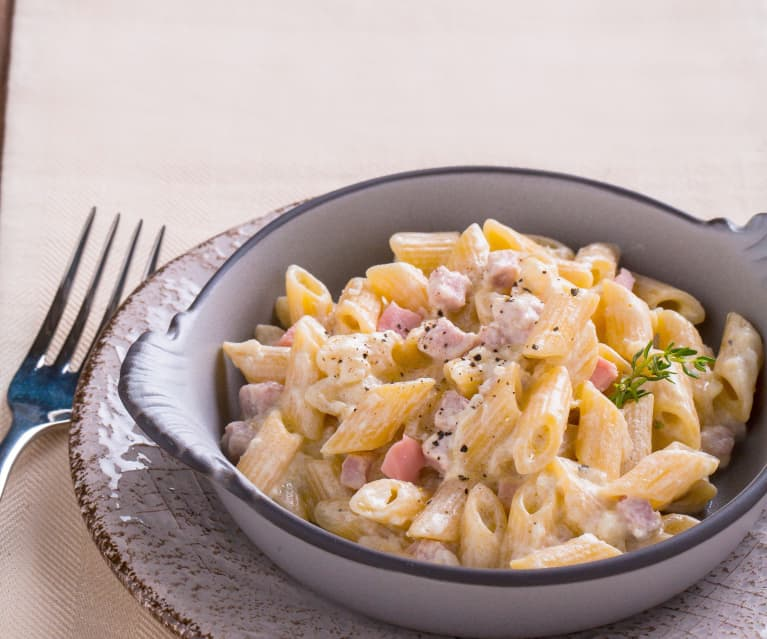

Pasta alla Panna

Description
Alla panna simply means "with cream sauce" in Italian.
This cream sauce can be likened to a French béchamel except no flour is used. The sauce thickens by reduction.
It can be used over pasta, meats, and vegetables. Consider a chicken and mushroom dish.
Ingredients
- 8 ounces butter
- 4 minced garlic cloves or chopped shallots (optional)
- 2 cups heavy cream
- 1 tablespoon chopped fresh Italian parsley (optional)
- 1 tablespoon chopped fresh basil (optional)
- Salt and pepper to taste
- 1 pound uncooked pasta of your choice
Instructions
- In a medium saucepan over medium heat, melt butter. Add garlic or shallots, if using, and saute until translucent.
- Add cream, whisking constantly, heating until bubblind and thickened.
- Add optional parsley, basil, and salt and pepper to taste, whicking until the sauce is velvety smooth.
- Keep sauce warm until ready to use.
- Cook pasta according to package directions.
- Divide pasta intu four servings and pour warm sauce on top.
Note: By adding 1 cup of Parmigiano-Reggiano cheese to step 3, above, you will have an Alfredo sauce.
Source: cooking.lovetoknow.com/alla-panna-sauce-recipe